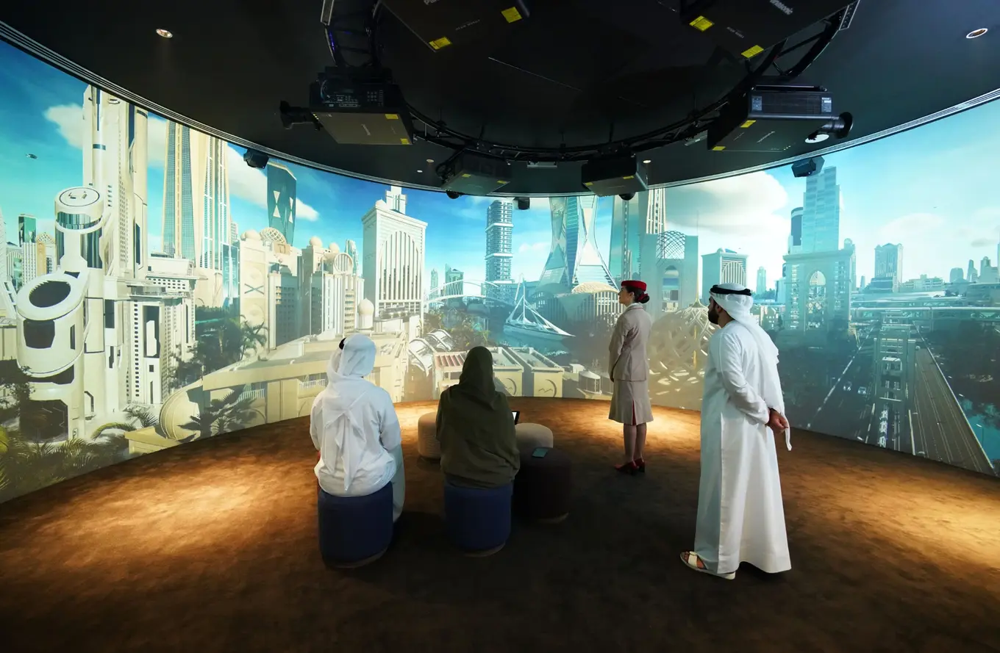

Аудиовизуальные системы
Современные музеи активно внедряют мультимедийные технологии для создания интерактивных экспозиций. Проекционные системы, светодиодные экраны демонстрируют исторические реконструкции и архивные материалы в высоком разрешении. Интерактивные сенсорные панели позволяют посетителям самостоятельно изучать дополнительный контент, а системы объемного звука с пространственной акустикой создают эффект присутствия.
Выбрать формат